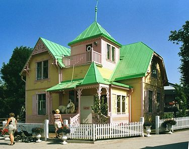
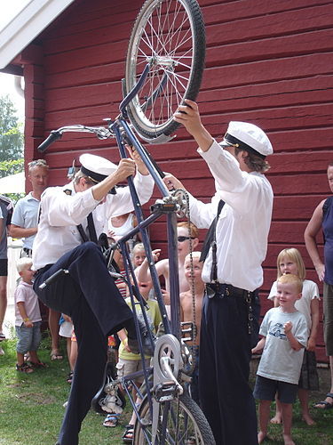

Pippi Långstrump
Pippi Långstrump, Pippilotta Viktualia Rullgardina Krusmynta Efraimsdotter Långstrump,[1] är en av Astrid
Lindgrens mest kända litterära figurer och även namnet på den första boken om Pippi och hennes vänner, Tommy och
Annika. Lindgren skapade karaktären 1941 och första boken kom ut 1945. Pippi-böckerna finns översatta till 77
olika språk (2020).[2]
Pippi är världens starkaste, har fräknar och röda flätor som står rakt ut, säger emot vuxna och är allmänt
ouppfostrad. I början när böckerna kom ut kunde hon upplevas som kontroversiell. Hon bor utan föräldrar i ett
hus kallat Villa Villekulla tillsammans med sin prickiga häst Lilla gubben och sin apa Herr Nilsson. Hon äter
"krumelurpiller" (som gör att man aldrig blir stor), hennes mamma är i himlen, hennes pappa Efraim Långstrump är
kung på söderhavsön Kurrekurreduttön och hon har en kappsäck full med guldpengar. I hennes trädgård finns ett
ihåligt träd där det enligt Pippi växer sockerdricka. I böckerna om Pippi myntas begrepp såsom
pluttifikationstabellen, spunk och sak-letare.
Historia

Vintern 1941 var Lindgrens 7-åriga dotter Karin sjuk i lunginflammation och sade till sin mor att hon ville höra
en berättelse om Pippi Långstrump. Lindgren började berätta och berättelserna om Pippi roade både Karin och
hennes vänner. När Lindgren en dag i mars 1944 stukade foten var hon tvungen att hålla sig i stillhet och under
den tiden skrev hon ned berättelserna. Vid Karins 10-årsdag i maj 1944 fick hon de nedskrivna berättelserna i
present.[3]
Efter att först ha blivit refuserad av Bonniers förlag gavs boken Pippi Långstrump ut av Rabén & Sjögren i
november 1945. Denna följdes av ytterligare två romaner och ett flertal kortare berättelser och bilderböcker.
För ytterligare information om den första bokens tillkomst, se Pippi Långstrump (bok).
Persongalleri

- Pippi Långstrump, böckernas huvudperson – den starkaste flickan i världen. Hon kan till och med lyfta sin
häst Lilla Gubben.
- Tommy och Annika Settergren, syskon, och Pippis grannar och bästa vänner. De är, i kontrast till Pippi, mer
lydiga och prydliga. De försöker hitta balansen mellan att tillfredsställa föräldrarnas, sin egen och Pippis
vilja.
- Herr Nilsson, Pippis apa; i böckerna en markatta, men i filmerna en dödskalleapa (Saimiris sciureus). I
böckerna om Pippi får apan vara just apa; trots namnet så förmänskligas inte Pippis apa utan han är ett
något ovanligt husdjur. Dödskalleapan i filmerna lånades från en familj i Stockholm. Eftersom den betedde
sig odrägligt vid inspelningarna skrevs den ut ur manus och skickades tillbaka till familjen.[4]
- Lilla Gubben, Pippis häst. Han bor i Pippis kök och älskar socker. Utmärkande för Lilla Gubben är att han är
full av stora svarta prickar (lika "fräknig" som Pippi), en variant av hästfärgen tigrerad. I filmerna är
hästens prickar inte äkta, utan målades dit inför inspelningarna. Lilla Gubben fick sitt smeknamn först i
och med TV-serien från 1969. I Astrid Lindgrens Pippi-böcker kallas han endast "Hästen". Inger Nilsson, som
spelade Pippi, klappade en dag om hästen i studion och sa "Ja du, lilla gubben", varpå regissören Olle
Hellbom och hans team beslöt att det var ett utmärkt namn. I verkligheten var Lilla Gubbens namn
ursprungligen Illbatting, men han var mer känd under sitt senare namn Bunting. Bunting utlånades till
filminspelningarna från Solna ridskola, där han hade smeknamnet ”Butte”. Han flyttade senare till Angarns
ridskola och levde sista tiden i ett stall vid Lindholmen i Vallentuna. Han blev nästan 25 år gammal.[5][4]
Böcker
- 1945 – Pippi Långstrump (utgiven i november 1945[13])
- 1946 – Pippi Långstrump går ombord
- 1947 – Känner du Pippi Långstrump? (bilderbok) Ill. av Ingrid Vang Nyman
- 1948 – Pippi Långstrump i Söderhavet